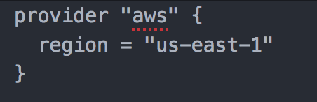
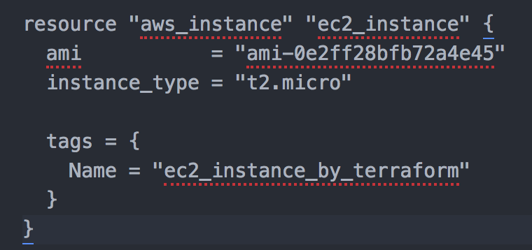
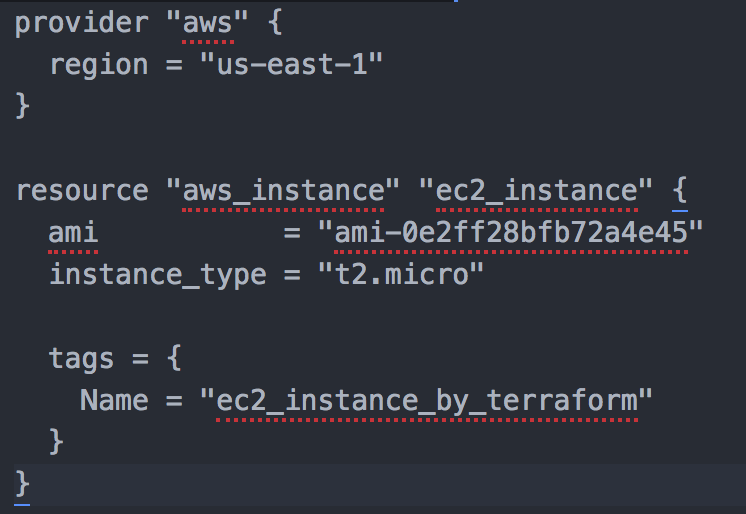

May 01, 2020
Terraform
In this blog, I will talk a little bit about an Infrastructure as a code tool that I have been using for the past couple of moths which is terraform.
Why Terraform?
- It is cloud agnostic, meaning that it can be used in different cloud providers. In my case, I am using Amazon Web Services but you can use terraform for other cloud providers as well.
- Allows building, changing, and versioning infrastructure safely and efficiently
- Easy to build and to destroy the whole infrastructure
- For a consistent configuration
- Open source
Installing terraform
Since I am using mac, I will be showing the installation on mac. If you have homebrew installed on your mac, you may just run the command bellow:
brew install terraform
If you don't have homebrew installed or if you don't want to use homebrew, you can download the binary zip file manually from hashicorp right here. And once you finished downloading it, unzip the file and then copy the binary to /usr/local/bin/terraform using the command below:
cp $HOME/Downloads/terraform /usr/local/bin/
To verify that you have successfully installed terraform, you can use the command below:
terraform -v
Creating a simple configuration file to launch an EC2 instance
The first thing you will need, is you will need to create a file with .tf extension using a text editor of your choice. We first would like to specify the provider for our infrastructure. In my case, I am using aws so, please refer to the following code below:

The next part is to build our ec2 instance configuration, we will then use the aws_instance resource. For this resource, there are two required argument we need to specify and those are the ami and instance type. In this example I also tagged the instance to name it. See the following code for the syntax:


Executing your terraform code:
The very first step that we need to do is to open our terminal and go to the directory where you save your terraform file. Once you are inside that directory, you can run the commands below:
- terraform init: this is the very first command you will need to run to initialize the working directory containing the terraform configuration file
- terraform plan: Once you initialized your working directory, you may run terraform plan to make sure that you don't have any syntax error and to see the recap of the resources that will be built
- terraform apply: this command will actually execute your code and will build all of the resources that you specify inside your terraform configuration files